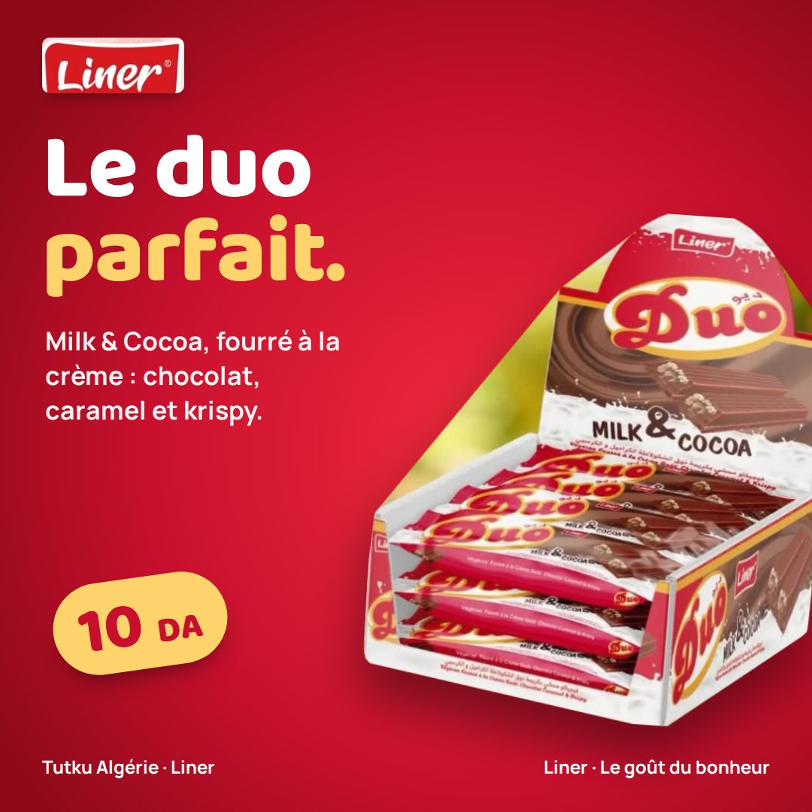
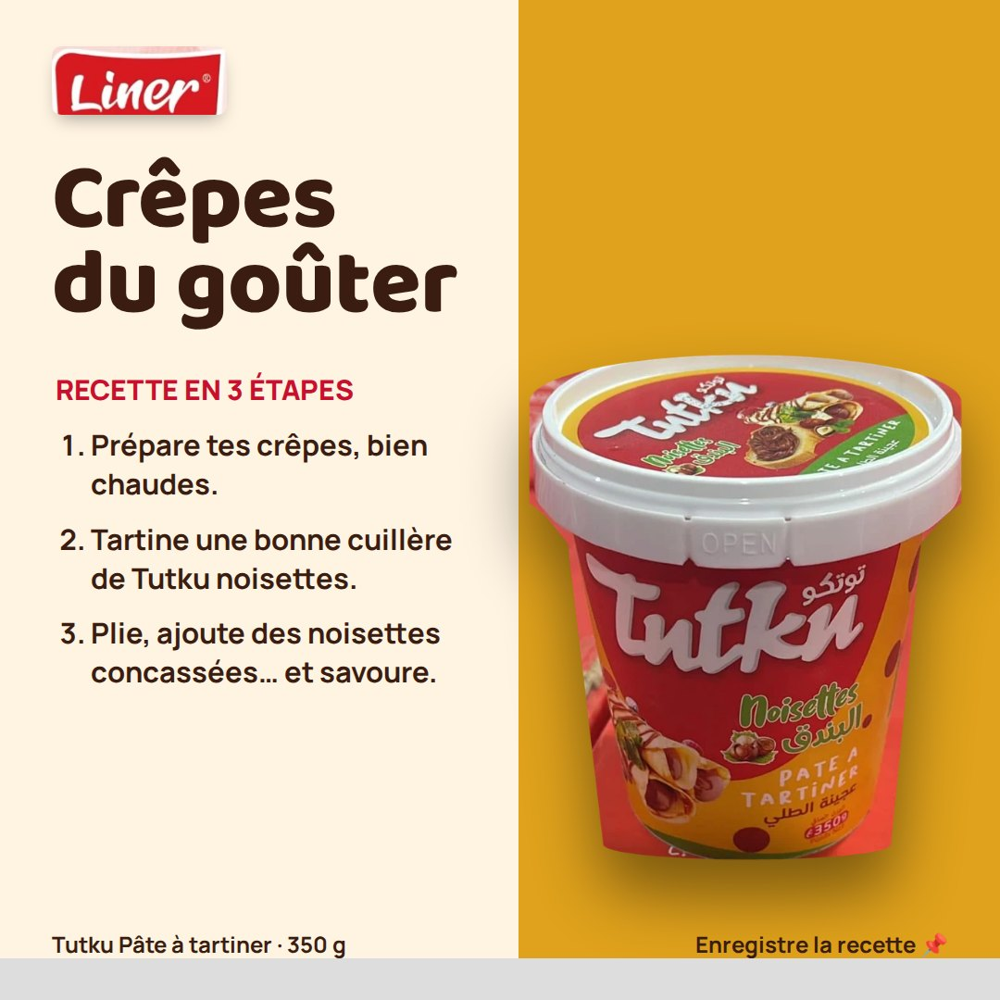
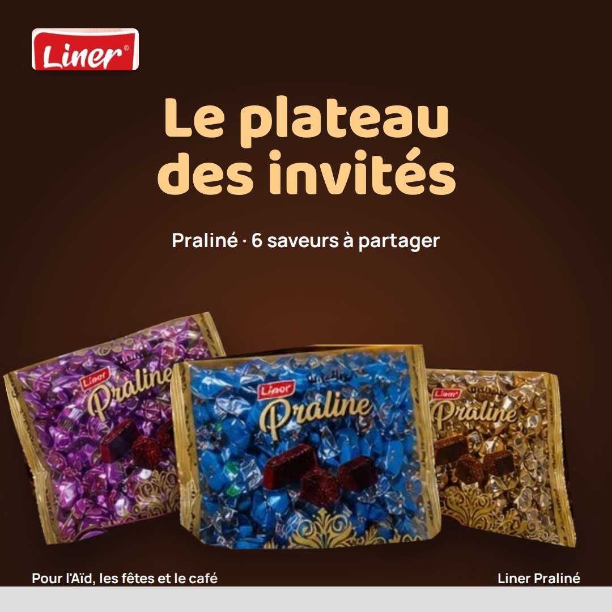
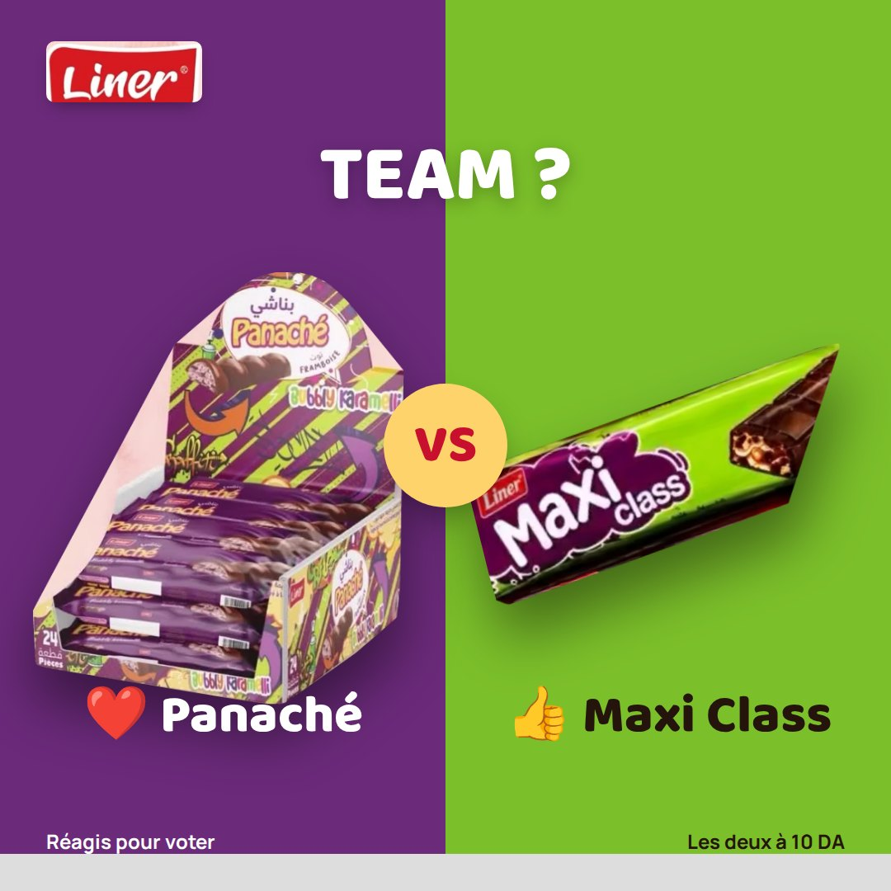
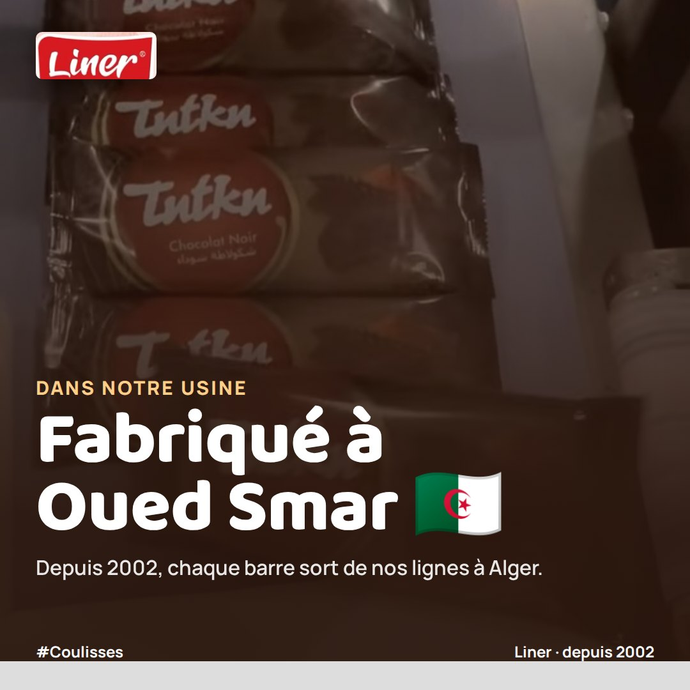
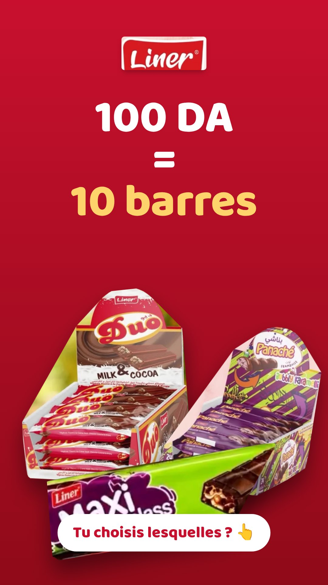

Faire de Liner la marque
chocolat la plus suivie d'Algérie.
Vos produits sont adorés et partagés (jusqu'à 137 partages sur une seule vidéo), mais les pages publient peu et sans régularité. Nous proposons une présence régulière, pensée pour faire vendre en magasin.
Le mix des 12 posts
Un équilibre entre produit, envie et engagement, pour ne jamais lasser l'abonné.
Produits & nouveautés
Mise en scène de chaque marque : Duo, Tutku, Maxi Class, Panaché, MariClass, Praliné.
Recettes & usages
Crêpes, gâteaux, goûters avec la pâte à tartiner et les biscuits Tutku.
Engagement
Sondages « Team Caramel ou Team Framboise ? », questions, tags entre amis.
Temps forts
Ramadan, Aïd, rentrée scolaire, fin d'année : le bon produit au bon moment.
Coulisses
L'usine d'Oued Smar, la production, l'équipe : la fierté du « fabriqué en Algérie ».
Jeu concours
Un jeu par mois pour faire grimper les abonnés et les partages.
À quoi ressemblera
votre fil.
Six visuels réalisés avec vos produits, prêts à publier.






Des stories qui
font réagir.
Formats verticaux pour Facebook et Instagram : prix 10 DA, sondages, coulisses, relais des points de vente.
- Conception graphique de chaque visuel
- Rédaction des textes FR et AR
- Calendrier éditorial validé chaque mois
- Programmation des publications
- Adaptation Facebook et Instagram
- Rapport mensuel : portée, réactions, abonnés
Un mois avec Liner
3 publications par semaine, aux heures où vos clients sont en ligne.
Proposition préparée par Webminds Digital Solutions. Tarifs communiqués sur devis.